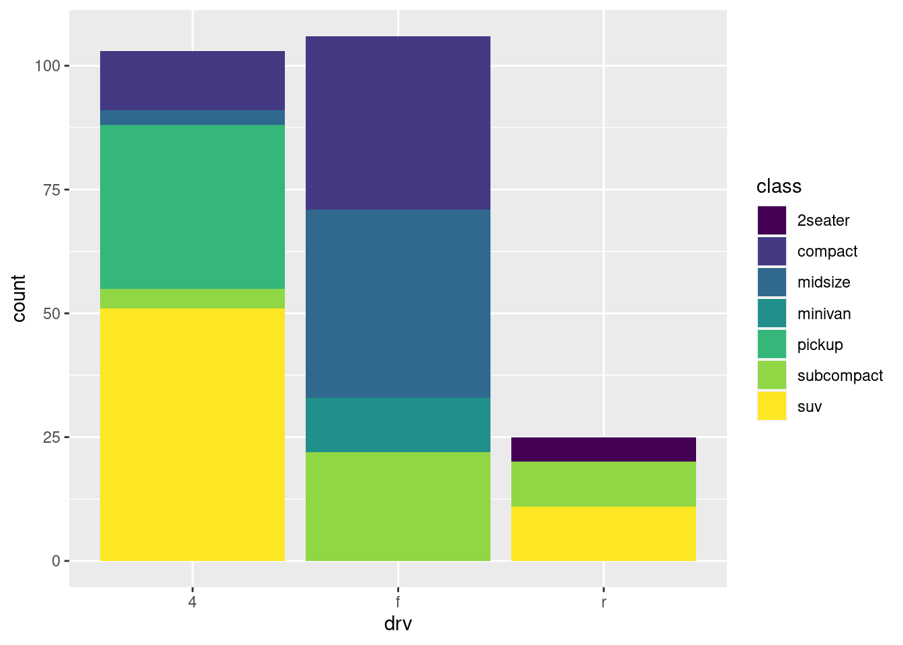

library(tidyverse)
library(openintro)HW 1 - Data visualization
Packages
Exercise 1
duke_forest |>
mutate(garage = if_else(str_detect(parking, "Garage"), "Garage", "No garage")) # |># A tibble: 98 × 14
address price bed bath area type year_built heating cooling parking
<chr> <dbl> <dbl> <dbl> <dbl> <chr> <dbl> <chr> <fct> <chr>
1 1 Learned … 1.52e6 3 4 6040 Sing… 1972 Other,… central 0 spac…
2 1616 Pinec… 1.03e6 5 4 4475 Sing… 1969 Forced… central Carpor…
3 2418 Wrigh… 4.20e5 2 3 1745 Sing… 1959 Forced… central Garage…
4 2527 Sevie… 6.80e5 4 3 2091 Sing… 1961 Heat p… central Carpor…
5 2218 Myers… 4.29e5 4 3 1772 Sing… 2020 Forced… central 0 spac…
6 2619 Vesso… 4.56e5 3 3 1950 Sing… 2014 Forced… central Off-st…
7 1803 Woodb… 1.27e6 5 5 3909 Sing… 1968 Forced… central Carpor…
8 19 Learned… 5.57e5 4 3 2841 Sing… 1973 Heat p… central Carpor…
9 2827 Mcdow… 6.97e5 4 5 3924 Sing… 1972 Other,… central Covered
10 2709 Mcdow… 6.5 e5 3 2 2173 Sing… 1964 Forced… other 0 spac…
# ℹ 88 more rows
# ℹ 4 more variables: lot <dbl>, hoa <chr>, url <chr>, garage <chr> # ggplot(...)Add narrative here…
Exercise 2
# add code hereAdd narrative here…
Exercise 3
brfss <- read_csv("data/brfss.csv")# add code hereAdd narrative here…
Exercise 4
# add code hereAdd narrative here…
Exercise 5
# add code hereAdd narrative here…
Exercise 6
- The gg in the name of the package ggplot2 stands for ___.
- If you map the same continuous variable to both
xandyaesthetics in a scatterplot, you get a straight ___ line. (Choose between “vertical”, “horizontal”, or “diagonal”.)
- Add narrative here…
ggplot(data=mpg,mapping=aes(x=drv,fill=class))+geom_bar() +scale_fill_viridis_d()
- Add narrative here…